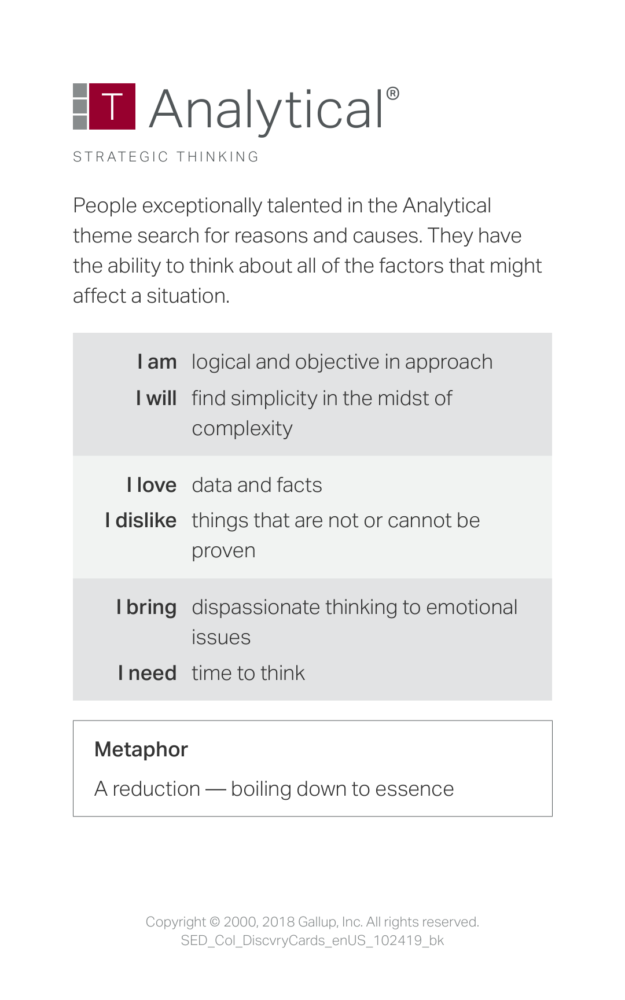
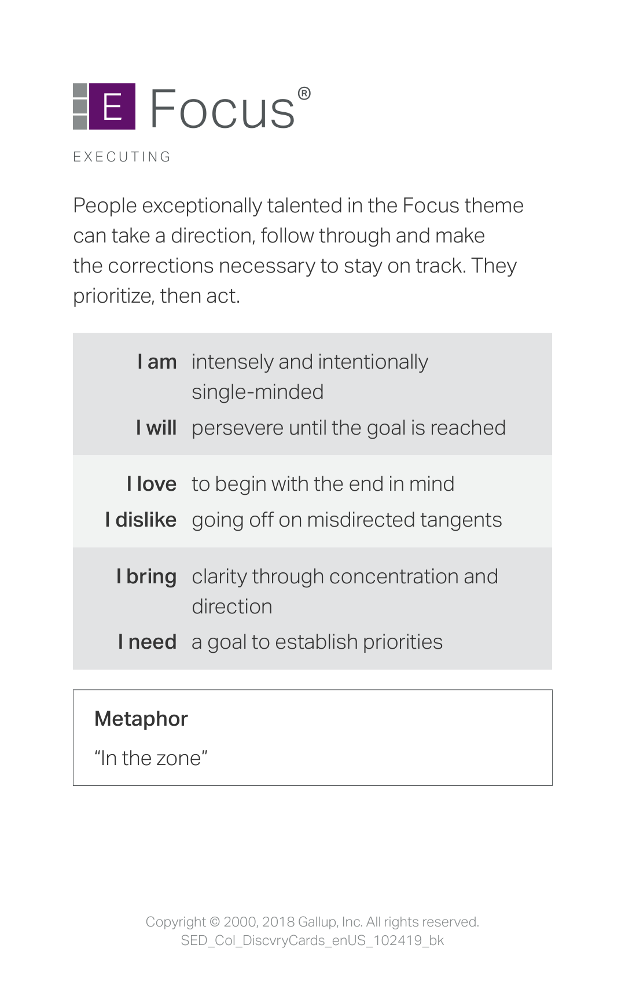
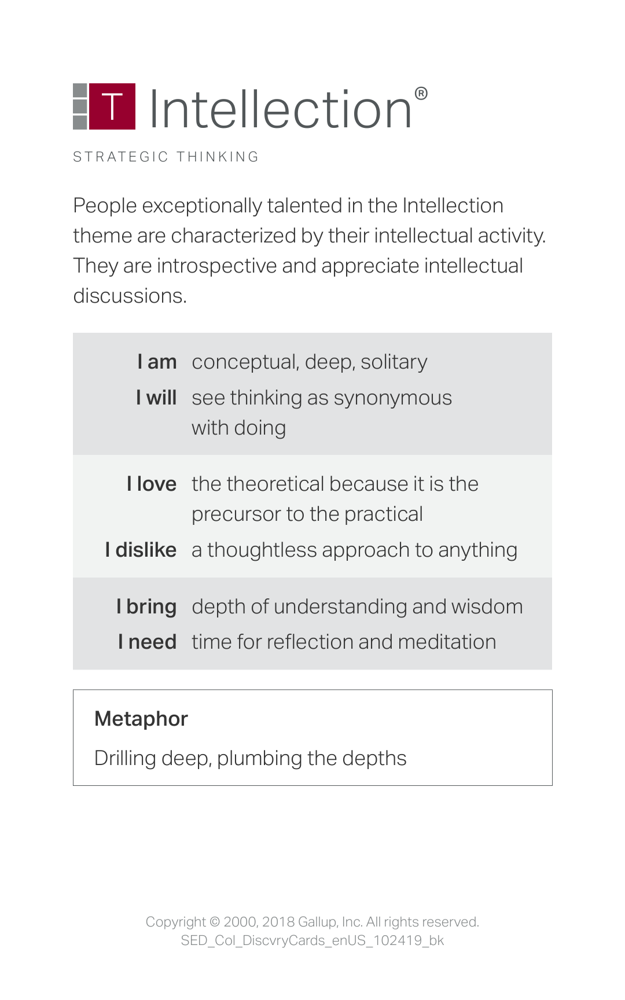
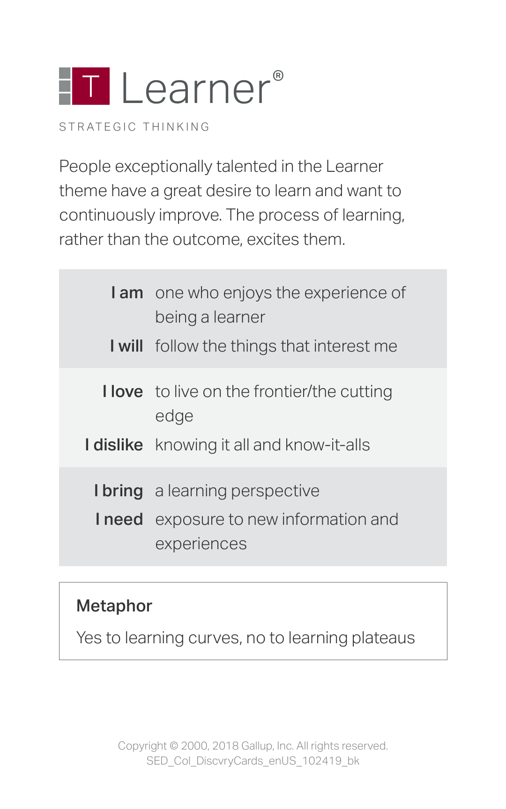
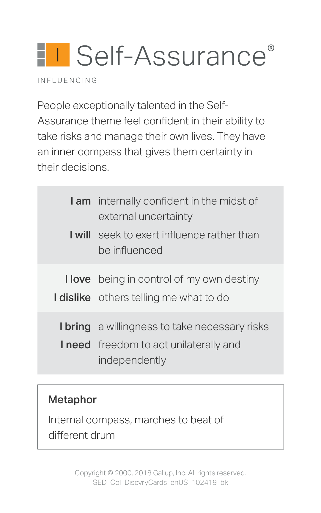

I chose Analytical because I naturally try to understand the reasons behind things. When I learn something in class, I like to break it down and figure out how and why it works. For example, when solving problems or studying concepts, I usually look for patterns or logic to make sense of the information. This strength helps me approach challenges in a clear and organized way.
I chose Focus because I like to concentrate on my goals and work step by step to achieve them. Focus just happens naturally for me; I could sit down and do a task for hours straight without getting distracted. In school, this helps me manage my time and finish my work on schedule. Having focus allows me to stay committed to what I need to accomplish.
I chose Intellection because I enjoy thinking deeply about ideas and reflecting on things I learn. In school, I often spend time analyzing topics and trying to understand them beyond just memorizing information. Sometimes I like to sit quietly and think about problems or concepts, especially when studying subjects that require critical thinking. This strength helps me better understand lessons and see different perspectives.
I chose Learner because I enjoy gaining new knowledge and improving my skills. I like the process of learning new things, whether it is through classes, online resources, or personal practice. For example, learning coding and web development has been interesting for me because it allows me to build new skills step by step. This strength motivates me to continue growing and developing.
I chose Self-Assurance because I believe it is important to trust your own judgment. Sometimes I am so self-assured that I never doubt my answer until I am proven wrong. In my life, this shows when I make decisions or take responsibility for my work. Even when something is difficult, I try to stay confident in my abilities and keep moving forward. This strength also helps me stay independent and believe in my own ideas.
The strength I most want to develop further is Learner. Even though I already enjoy learning new things, I want to challenge myself to explore more skills and knowledge outside of school. I plan to try new topics, practice more consistently, and take on projects that push me to learn faster and deeper. I also want to learn other skills like playing guitar, learning music theory, etc. So, by developing my Learner strength, I hope to keep growing personally and academically while staying curious and motivated.